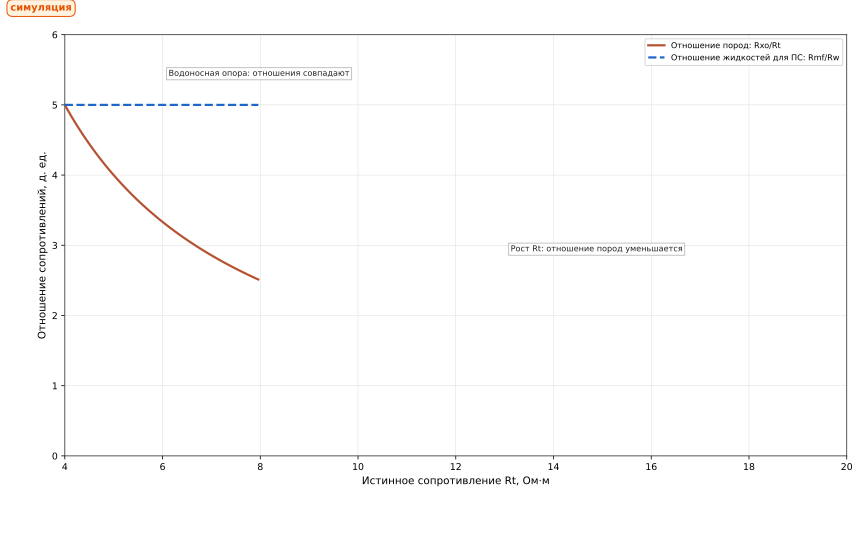
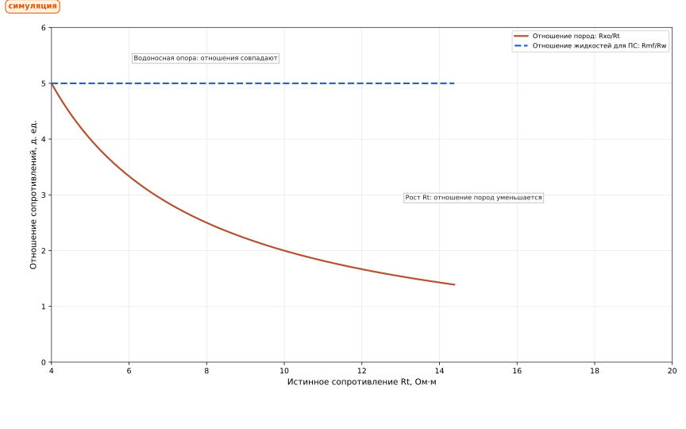
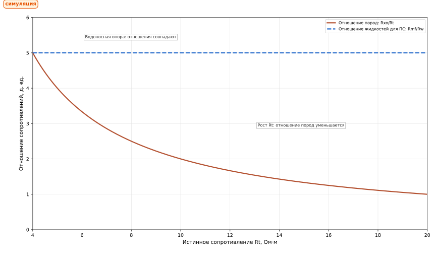
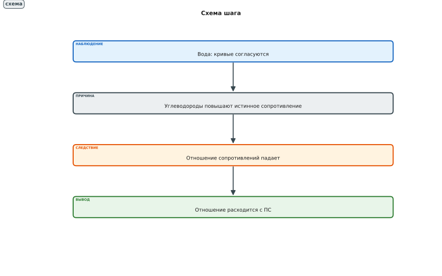

Стр. 129 · Patterns to observe
From Chapter 2, the equation relating the SP to fluid resistivities is:
Log InterpretationШаг 19 из 66
В книге: «Rₓₒ/Rₜ» стр. 129
Опирается на: шаг 18 «Что даёт быстрая оценка» (предпосылка), шаг 12 «Как обойтись без кривой пористости» (предпосылка)
ПС и отношение сопротивлений согласуются в водоносном интервале.
Углеводороды меняют истинное сопротивление, поэтому совпадение кривых может нарушиться.
Пороговая идея. ПС и отношение сопротивлений чувствительны к разным вещам при наличии углеводородов. модель



Показать водоносную опору: общий форм-фактор сокращается. ПС определяют свойства жидкостей, а не величина сопротивления породы сама по себе.
Допущения: Условные значения, не из книги: сопротивление пластовой воды 0,16 Ом·м, фильтрата 0,80 Ом·м, форм-фактор 25. В водоносной опоре Rxo = 20 Ом·м и Rt = Ro = 4 Ом·м.; График показывает зависимость отношения при изменении Rt до условных 20 Ом·м и постоянном Rxo; фактические каротажные кривые и влияние среды не моделируются..
ПС — отклик на различие сопротивлений жидкостей. В водоносном пласте форм-фактор, общий множитель породы, связывает сопротивления жидкости и породы. Он сокращается в отношении сопротивлений двух зон. В общем случае водонасыщенное сопротивление заменяют истинным. В водяном интервале кривые движутся в одну сторону от своих базовых линий. стр. 129
«From Chapter 2, the equation relating the SP to fluid resistivities is:»
«The $R_{xo}/R_o$ ratio is then related to the SP through a constant.»
«Since $R_o$ is just a special case of $R_t$ ($R_o$ is the resistivity in the undisturbed, water-bearing zone), $R_t$ can be substituted for $R_o$ for the more general case.»
«In water-bearing intervals, the $R_{xo}/R_t$ ratio parallels the response of the SP, and both curves move in the same direction from their respective baseline values.»

Базовая линия — положение кривой, от которого отсчитывают отклонение. При углеводородах ПС всё ещё зависит от сопротивлений пластовой воды и фильтрата. Рост истинного сопротивления уменьшает отношение. Поэтому отношение уходит от кривой ПС. стр. 129
«In a hydrocarbon-bearing interval, while the SP still responds to the differences in connate water and mud filtrate resistivities and moves accordingly,»
«the $R_{xo}/R_t$ ratio decreases (because of increasing $R_t$) and the $R_{xo}/R_t$ curve moves away from the SP.»
Мелкое сопротивление получают микросферически фокусированным или микробоковым каротажем. Глубинное — глубинным индукционным или боковым каротажем. При расчёте в ходе каротажа измерения обычно используют без поправок за условия среды. стр. 129
«The $R_{xo}$ curve usually used for the ratio is derived from a shallow-reading measurement, such as a microspherically focused log or a microlaterolog.»
«The $R_t$ curve is derived from a deep-reading measurement such as the deep induction log or deep laterolog.»
«In practice, especially when the ratio is calculated and displayed as part of the logging job, the measurements are normally used without any environmental corrections being applied.»
Номера ссылок в предложении о подстановке не совпадают с номерами соседних формул. Сравнивайте их по обозначениям. пояснение модели
Связь ПС и сопротивлений жидкостей стр. 129
| Обозначение | Что это | Единицы |
|---|---|---|
| $SP$ | самопроизвольная поляризация | — |
| $K$ | коэффициент пропорциональности | — |
| $R_{mf}$ | сопротивление фильтрата | — |
| $R_w$ | сопротивление пластовой воды | — |
Сопротивление промытой зоны в водоносном пласте стр. 129
| Обозначение | Что это | Единицы |
|---|---|---|
| $R_{xo}$ | сопротивление промытой зоны | — |
| $F$ | форм-фактор | — |
| $R_{mf}$ | сопротивление фильтрата | — |
Сопротивление водоносной незатронутой зоны стр. 129
| Обозначение | Что это | Единицы |
|---|---|---|
| $R_o$ | сопротивление водонасыщенной незатронутой зоны | — |
| $F$ | форм-фактор | — |
| $R_w$ | сопротивление пластовой воды | — |
Связь ПС с отношением двух сопротивлений в водоносном пласте стр. 129
| Обозначение | Что это | Единицы |
|---|---|---|
| $SP$ | самопроизвольная поляризация | — |
| $K$ | коэффициент пропорциональности | — |
| $R_{xo}$ | сопротивление промытой зоны | — |
| $R_o$ | сопротивление водонасыщенной незатронутой зоны | — |
Сопротивления воды, фильтрата и двух зон, ПС → Ожидаемое согласие для водоносного пласта и объяснение расхождения в углеводородном.
Два сенсора согласуются при базовом сценарии и расходятся, когда скрытое состояние меняет лишь один канал.
Где аналогия перестаёт работать: Кривые связаны через физические сопротивления, а не через универсальную калибровку.
Номера уравнений в предложении о подстановке не совпадают с номерами рядом стоящих формул; ориентируйтесь на символы при чтении.
Верный ответ: Сопротивление пластовой воды; Сопротивление фильтрата
ПС остаётся откликом на различие сопротивлений жидкостей. Где это в тексте (стр. 129) →
Расположите причины расхождения по порядку.
Перетащите пункты (мышью или пальцем за ⠿) или двигайте кнопками ↑ ↓.
Верный ответ: Истинное сопротивление растёт → Отношение сопротивлений падает → Кривые отношения и ПС расходятся
Рост знаменателя снижает отношение, а механизм ПС не меняется. Где это в тексте (стр. 129) →
Верный ответ: Измерения обычно используют без поправок за условия среды
Это описание оперативной практики, а не правило для любой интерпретации. Где это в тексте (стр. 129) →
Все утверждения шага с дословной цитатой автора и страницей книги (по PDF).
ПС связывают с сопротивлениями жидкостей. наблюдение
«From Chapter 2, the equation relating the SP to fluid resistivities is:»
Отношение сопротивления промытой зоны к водонасыщенному сопротивлению связано с ПС через постоянный коэффициент. наблюдение
«The $R_{xo}/R_o$ ratio is then related to the SP through a constant.»
Для общего случая сопротивление водонасыщенной незатронутой зоны заменяют истинным сопротивлением. наблюдение
«Since $R_o$ is just a special case of $R_t$ ($R_o$ is the resistivity in the undisturbed, water-bearing zone), $R_t$ can be substituted for $R_o$ for the more general case.»
В водоносных интервалах кривые идут в одну сторону от своих базовых линий. наблюдение
«In water-bearing intervals, the $R_{xo}/R_t$ ratio parallels the response of the SP, and both curves move in the same direction from their respective baseline values.»
В углеводородном интервале ПС откликается на различие сопротивлений пластовой воды и фильтрата. наблюдение
«In a hydrocarbon-bearing interval, while the SP still responds to the differences in connate water and mud filtrate resistivities and moves accordingly,»
Рост истинного сопротивления уменьшает отношение, и его кривая расходится с ПС. наблюдение
«the $R_{xo}/R_t$ ratio decreases (because of increasing $R_t$) and the $R_{xo}/R_t$ curve moves away from the SP.»
Мелкую кривую получают, например, микросферически фокусированным или микробоковым каротажем. наблюдение
«The $R_{xo}$ curve usually used for the ratio is derived from a shallow-reading measurement, such as a microspherically focused log or a microlaterolog.»
Глубинную кривую получают, например, глубинным индукционным или боковым каротажем. наблюдение
«The $R_t$ curve is derived from a deep-reading measurement such as the deep induction log or deep laterolog.»
При расчёте в ходе каротажа измерения обычно используют без поправок за условия среды. наблюдение
«In practice, especially when the ratio is calculated and displayed as part of the logging job, the measurements are normally used without any environmental corrections being applied.»
Стр. 129 · Patterns to observe
From Chapter 2, the equation relating the SP to fluid resistivities is:
Стр. 129 · Patterns to observe
$$SP = -K \times \log\left(\frac{R_{mf}}{R_w}\right) \tag{7.9}$$
Стр. 129 · Patterns to observe
In water-bearing zones:
Стр. 129 · Patterns to observe
$$R_{xo} = F \times R_{mf} \quad (\text{flushed zone}) \tag{7.10}$$
Стр. 129 · Patterns to observe
$$R_o = F \times R_w \quad (\text{uninvaded zone}) \tag{7.11}$$
Стр. 129 · Patterns to observe
Solving Equations 7.2 and 7.3 for $R_{mf}$ and $R_w$ respectively, and substituting the results in Equation 7.1 yields:
Стр. 129 · Patterns to observe
$$SP = -K \times \log\left(\frac{R_{xo}}{R_o}\right) \tag{7.12}$$
Стр. 129 · Patterns to observe
The $R_{xo}/R_o$ ratio is then related to the SP through a constant. Since $R_o$ is just a special case of $R_t$ ($R_o$ is the resistivity in the undisturbed, water-bearing zone), $R_t$ can be substituted for $R_o$ for the more general case. In water-bearing intervals, the $R_{xo}/R_t$ ratio parallels the response of the SP, and both curves move in the same direction from their respective baseline values. In a hydrocarbon-bearing interval, while the SP still responds to the differences in connate water and mud filtrate resistivities and moves accordingly, the $R_{xo}/R_t$ ratio decreases (because of increasing $R_t$) and the $R_{xo}/R_t$ curve moves away from the SP.
Стр. 129 · Patterns to observe
The $R_{xo}$ curve usually used for the ratio is derived from a shallow-reading measurement, such as a microspherically focused log or a microlaterolog. The $R_t$ curve is derived from a deep-reading measurement such as the deep induction log or deep laterolog. In practice, especially when the ratio is calculated and displayed as part of the logging job, the measurements are normally used without any environmental corrections being applied.
На этот шаг опираются: шаг 20 «Две кривые на одной дорожке».
Почему сопротивление расходится с ПС
Ссылки в ответе ведут к исходному тексту.